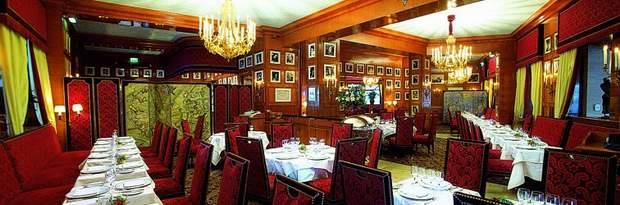

We provides a selection of Paris leading establishments offering French cuisine. Whether seeking meats roast or in sauce, market-fresh vegetables, delicately seasoned fish or traditional French dishes, choose your traditional cuisine restaurant from the prime addresses of Best Restaurants Paris. Consult the detailed sheets of the featured establishments and choose that traditional cuisine restaurant you're looking for. The photos, extracts from the carte and comprehensive practical information will give you a clearer idea of what to expect from the traditional cuisine restaurant where you would like to lunch or dine.

With more than a century of history behind it, the Fouquet's, this legendary Champs-Elysées in the restaurant 8th district, is a popular location favoured by global celebrities and stars of popular culture and the silver screen. In this recently renovated and prestigious establishment, chef Jean-Yves Leuranguer, winner of the coveted “Meilleur Ouvrier de France” award, has perfectly preserved the best of traditional cuisine within the essence of a French “brasserie de luxe”.